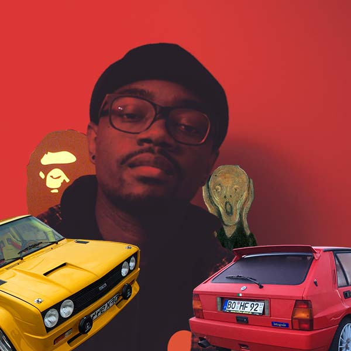

|
|
 #SELFIEThis was more challenging than I anticipated as there are many things that can be considered defining characteristics about oneself. I went back and forth about which things mattered the most to me that would help to give the viewer a better idea of who I am without having to tell them with words. A litany of cars, clothes, plants, music, art and furniture were left on the cutting room floor for the sake of the final image, instead, I chose to highlight the few things that have been on my mind as of late. Art: represented by one of my favorite paintings “the Scream” by Edvard Munch, Clothes: represented by the mascot for the Japanese streetwear brand A Bathing Ape, and a depiction of my newfound affinity for boxy cars from the 80s and 90s. I couldn’t decide between the two, so I chose both the Fiat 131 and Lancia Delta Integrale. Fogo, Marlon. Untitled. Marlon Fogo. Nov. 27, 2018 |